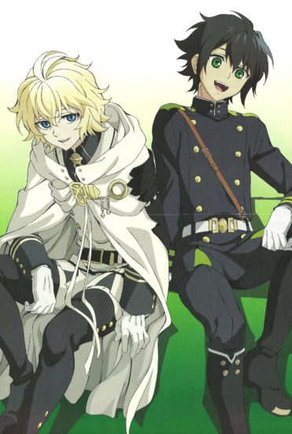

Upcoming Anime TV shows to expect in 2020
С момента выхода первой серии первого сезона стремительно набирал популярность и сейчас находится в топе по просмотрам на многих СНГ аниме сайтах. В конце 2015 года состоялся показ последнего эпизода второго сезона аниме Последний Серафим.
Дата релиза третьего сезона была отложена дважды. Скорее всего это из-за того что второй сезон не смог набрать столько же просмотров сколько и первый. Но было сказано что ожидать выход нового сезона на экраны стоит с лета 2020 года.
Подробная информация про аниме Owari no seraph.
|
 |
В 2017 году это аниме было очень популярным и даже пробивалось в топ 10 по просмотрам на СНГ аниме сайтах. Второй сезон Нет игры, нет жизни по-настоящему ждали многие, но он по неизвестной причине так и не вышел. Многие прогнозируют выход второго сезона этого аниме в 2020 году.
Подробная информация про аниме No game, no life.
|
|